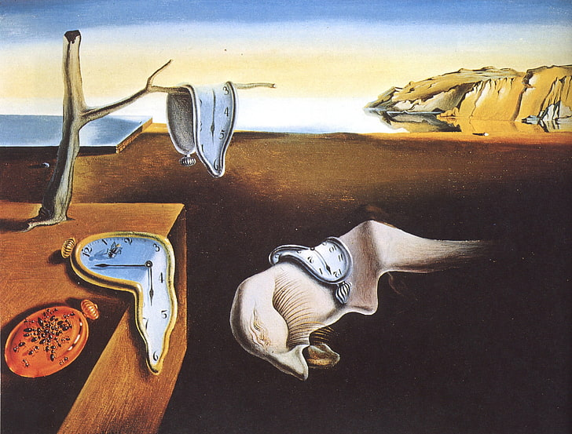

Born in Figueres, Catalonia, Spain, Dalí
Received his formal education in fine arts in Madrid.
Influenced by Impressionism and the Renaissance masters from a young age he became increasingly attracted to Cubism and avant-garde movements.
He moved closer to Surrealism in the late 1920s and joined the Surrealist group in 1929, soon becoming one of its leading exponents.
His best-known work, The Persistence of Memory, was completed in August 1931, and is one of the most famous Surrealist paintings.
Dalí lived in France throughout the Spanish Civil War (1936 to 1939) before leaving for the United States in 1940 where he achieved commercial success.
He returned to Spain in 1948 where he announced his return to the Catholic faith and developed his "nuclear mysticism" style, based on his interest in classicism, mysticism, and recent scientific developments.